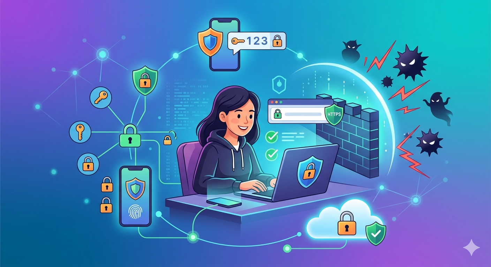
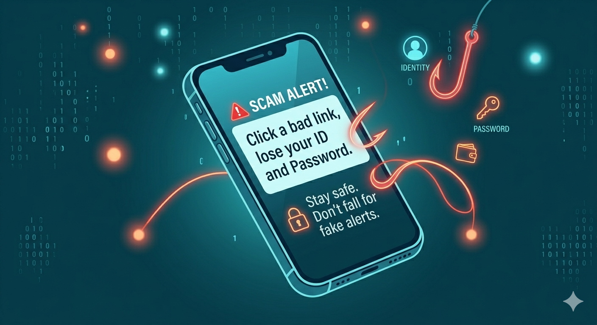
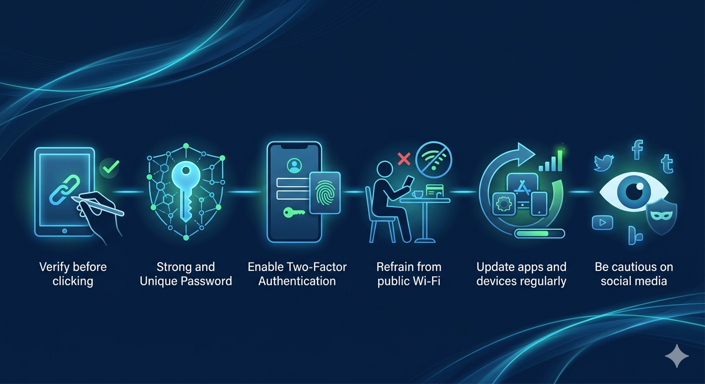

How to Protect Yourself Online

In today's generation where digital stuff is everywhere, it is necessary to know how we can protect ourselves online. Every time we use technologies and browse in social media, connect to public Wi-Fi, click unfamiliar links etc. we are exposing ourselves to potential cyber threats like phishing, identity theft, malware and online scams.
Online security refers to the practices and tools that we can use to protect our personal information, identity and prevent cybercrimes. This means creating strong passwords, enabling two-factor authentication (2FA), and being cautious on suspicious links.
Online safety is a concept of being digitally aware. By being mindful in internet such us, clicking, posting, sharing and who we interact with. For the reason that hackers rely on human errors and not on technical issues. Just like phising—tricking users into giving sensitive or personal information by pretending to be a legitimate person or companies.
Additionally, the concept of Data Privacy. Oversharing on social media is harmful and can be an easy target for cyber criminals. That's why private information like name, address, phone number, real-time location and bank details should always be tracked and protected.
Therefore, to protect ourselves in the online world, we should know to combine smart behavior with security tools to at least reduce the risk that we can encounter in today's digital world and to be safe while enjoying browsing.
Real-World Application

In our country Philippines, online scams are becoming common, especially on Facebook, messages, and online shopping applications. One of the best examples is "phishing text scams" where users receive messages from someone who's pretending to be from banks or even claiming that you won money from a raffle—asking individuals to click, enter personal information or look for their account online.
For instance, way back 2023, the Bangko Sentral ng Pilipinas warned the public about spreading of fake messages pretending to be from BDO or GCash. A lot of Filipinos were tricked by clicking links that led to fake websites, which resulted in stolen bank information and loss of money.

Here are some useful tips to protect yourself in this kind of situation:
- Verify before clicking: Make it a habit of checking the sender of the messages or emails if it's from a legitimate person or companies.
- Use strong and unique passwords: Avoid using predictable passwords like "123456789" or your birthday. Learn to combine letters, numbers, and symbols.
- Enable Two-Factor Authentication (2FA): It is an extra layer of security especially for banking and securing your social media accounts.
- Refrain from using public Wi-Fi for transactions: Some public networks (like in malls or cafés) are often unprotected and prone to cyberattacks.
- Update apps and devices regularly: Updates resolve security problems that hackers could exploit.
- Be cautious on using social media: Do not share too much personal information, especially your exact location or financial details.
By applying these practices, us Filipinos can reduce the risk of becoming victims of internet threats.
"Protecting yourself online is protecting the people you love offline"
— Kristine Mae De Leon
Author's Reflection
As someone who lives in the digital era and uses online platforms, it is really a necessity to be aware of the harms we can encounter during our usage. It is not just about protecting ourselves, but it also includes protecting our families, friends and those people around us who we are interacting with. Applying those practices will protect and prevent us from being lured by cybercriminals. It will help us guard our personal identity, online belonging (like bank accounts) and online transactions or contacts.
Awareness and prevention of being a victim of internet threats will be beneficial for our future profession. We cannot just protect ourselves but also our clients or company we are working with. With this knowledge, I can assist those people who are not fully aware of the threats online and aid their needs in case they encounter cybersecurity problems. Moreover, protecting ourselves online is not just about being digitally aware—it's also about being wise in using the internet, being informed, alert, and responsible in dealing with a new era.